Cigar Review: Bolivar Royal Coronas
In this post, I will be sharing some quick review of my time with Bolivar Royal Coronas. Spoiler: It's a lovely cigar ❤
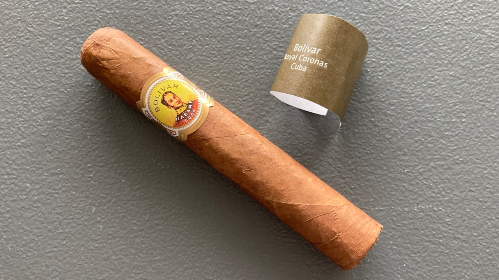 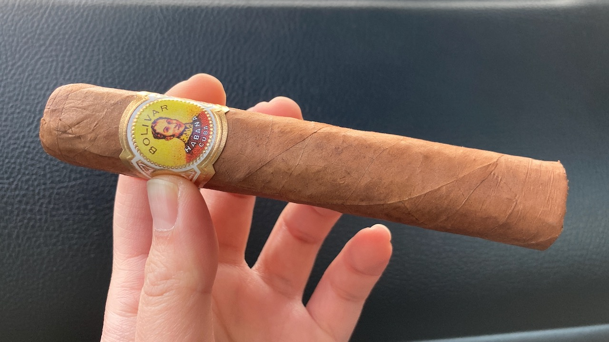
The construction of this cigar is beautiful. It's not the most heavily packed cigar, but it's quite packed. It is also not exactly round so it does not roll around on the table. It's a nice feature that I think all cigar should maybe be in this slightly rectangular shape. 😝
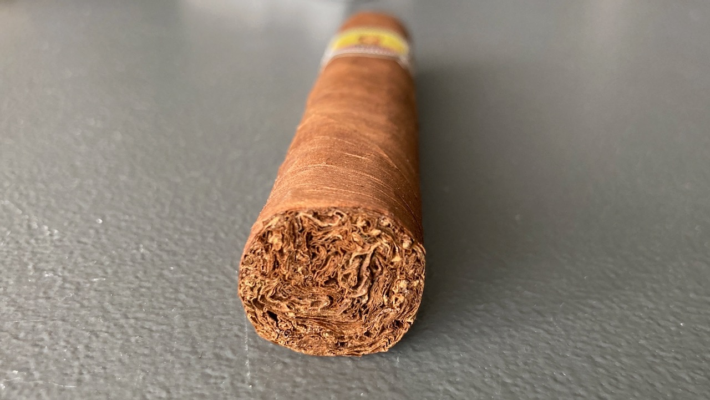
I used my new yellow cutter to cut this cigar. Not the best job because I sliced a bit more than just the cap, maybe I'll be better next time. 😆
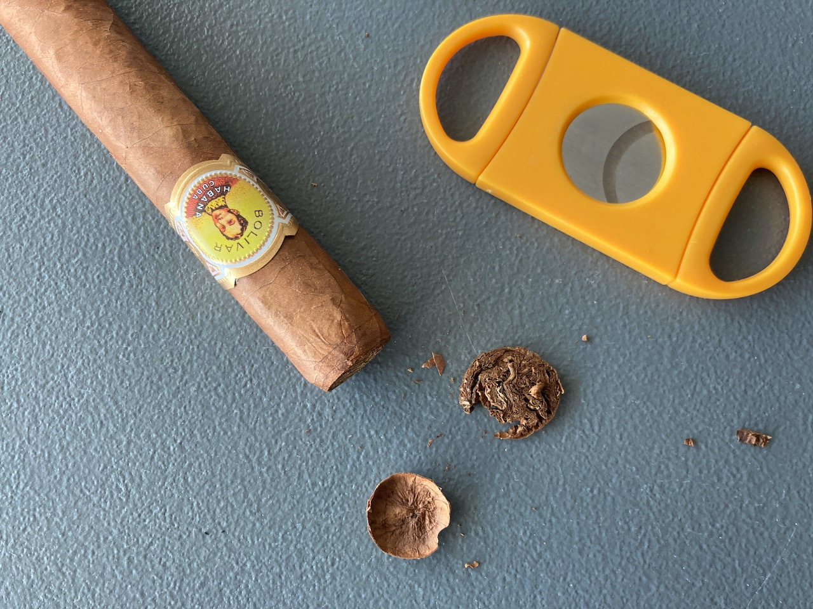 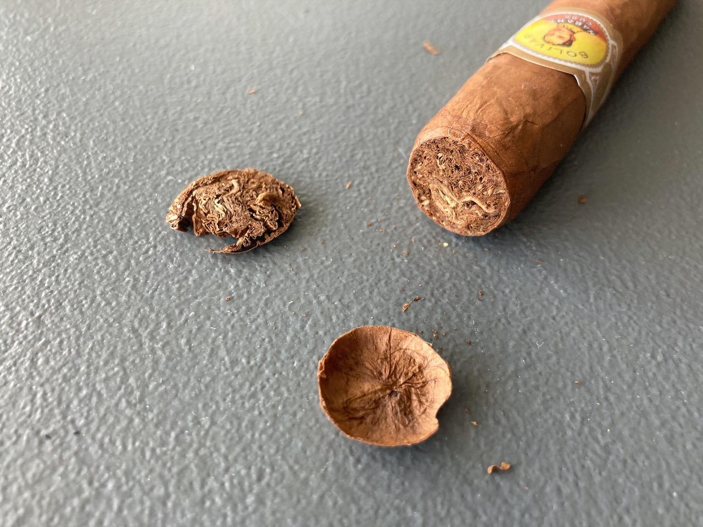
First few draws was amazing. ✨ It was like a sweet vanilla aroma. It was just smooth and lovely. Montecristo White Series was strong nutty flavour, but this one also got a subtle hint of nutty flavour. It was such a stunning combination at the start and I love it!
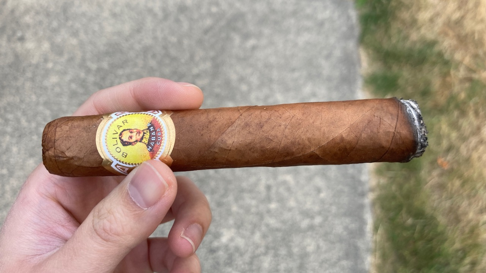 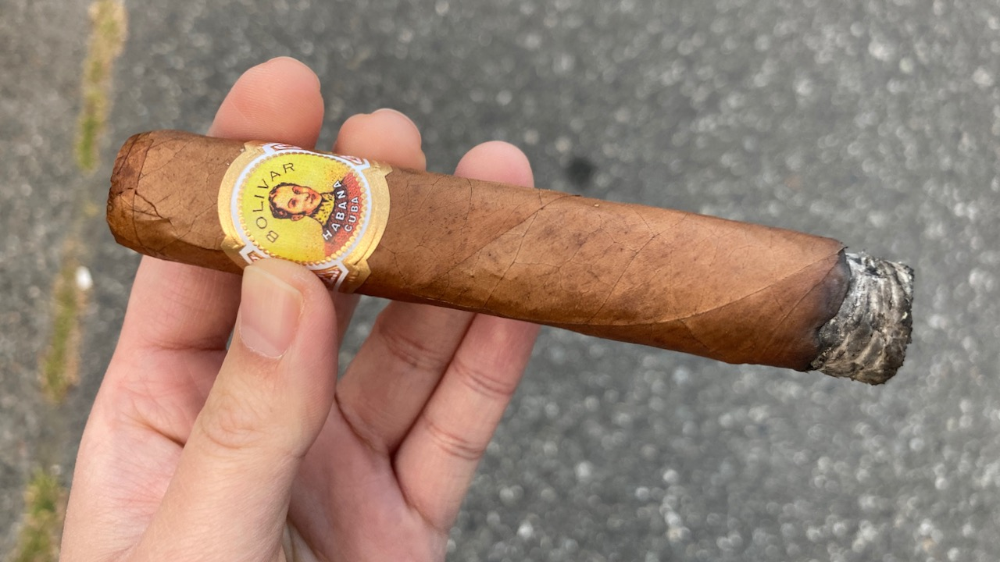 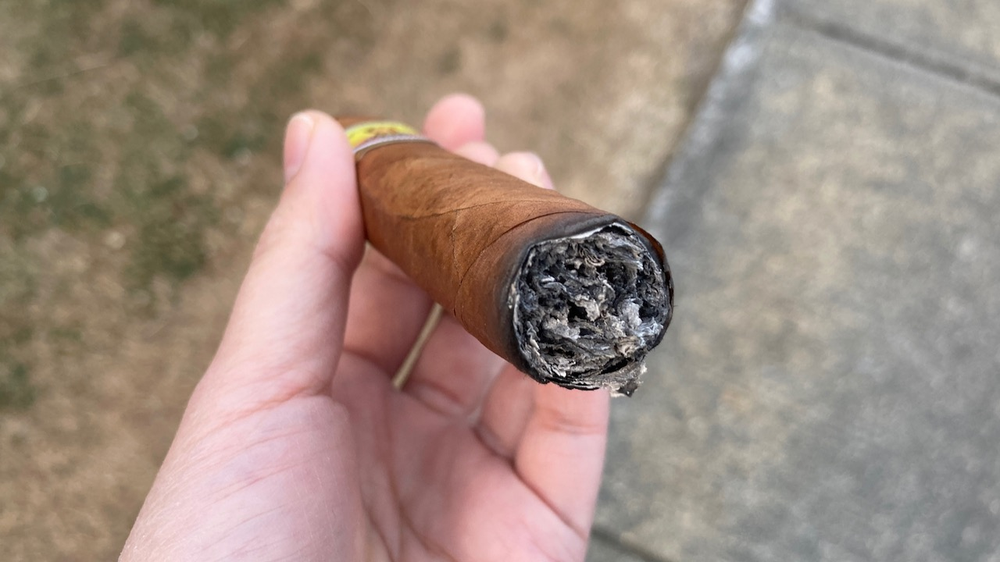 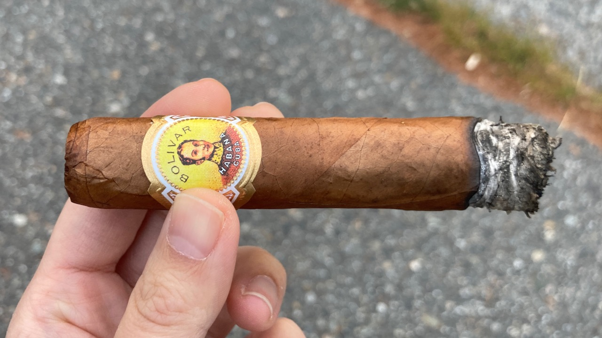
The burn of the cigar is not exactly the prettiest though. I was enjoying this cigar at a rather windy day so that probably contributed some factor into the uneven burns. It is not that difficult to correct it, but have to watch it constantly. The neighbourhood is chill to walk around though. It's quiet and full of mansions.
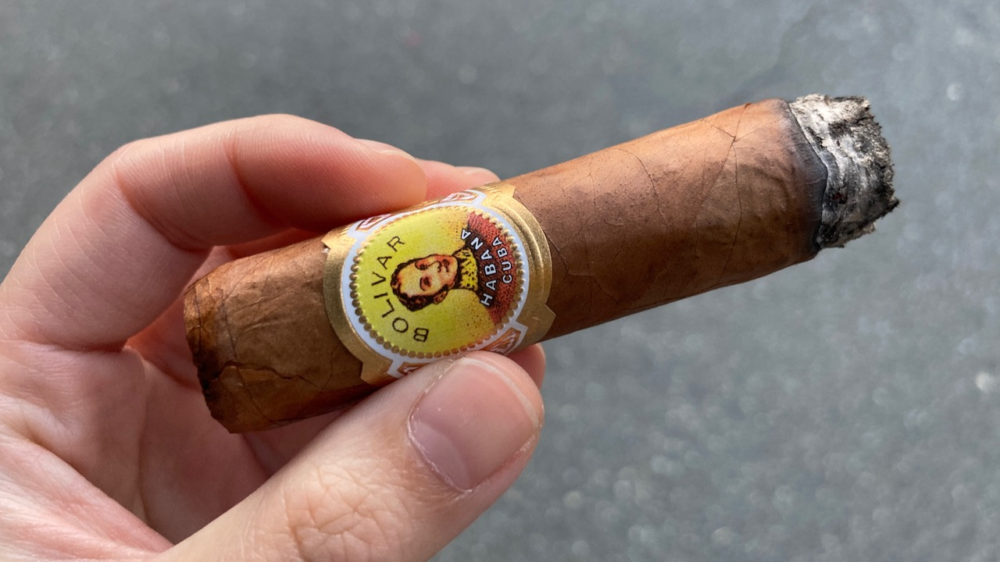
Midway to the body started to have spice. There was still a little bit of that sweet aroma left. The nutty flavour was still there but very fainted. This is pretty much the same flavour that I tasted midway towards the end. Not much new flavours added, but I did find some leftover sharp spice in my mouth. :/
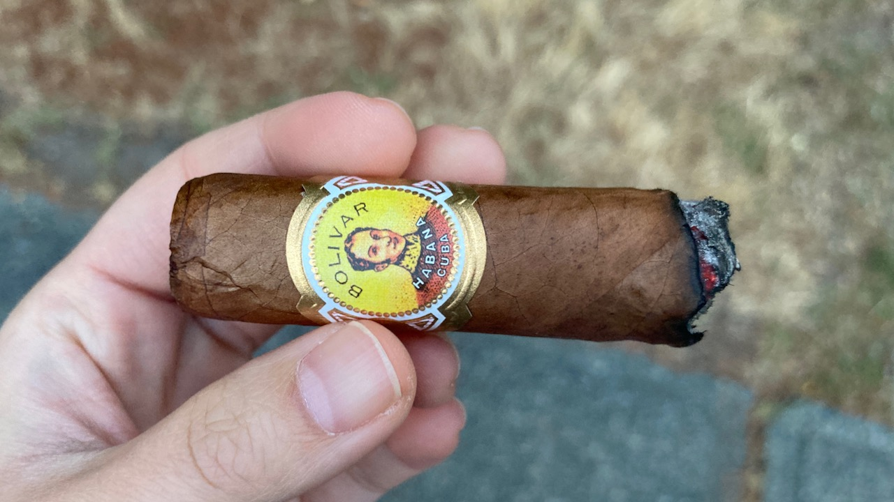 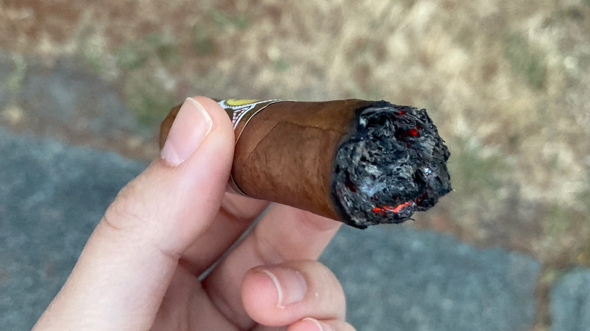 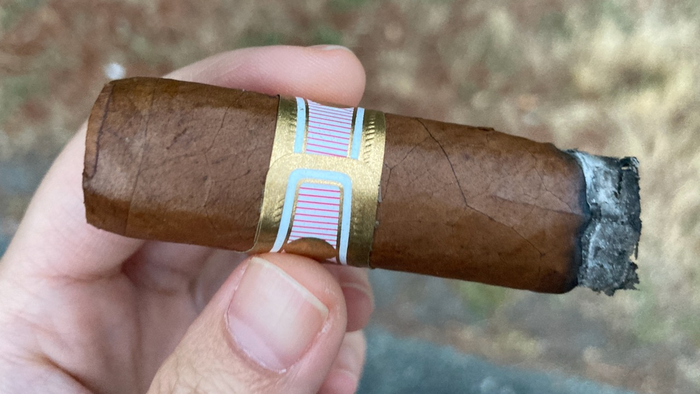 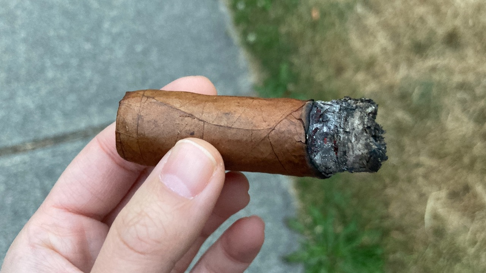
Overall, it's a very enjoyable cigar in my opinion. I still have some sweet nutty cedary after taste along with the sharp spice. I think H. Upmann Half Corona is still my favourite so far, but I would definitely recommend this one as well. 😋
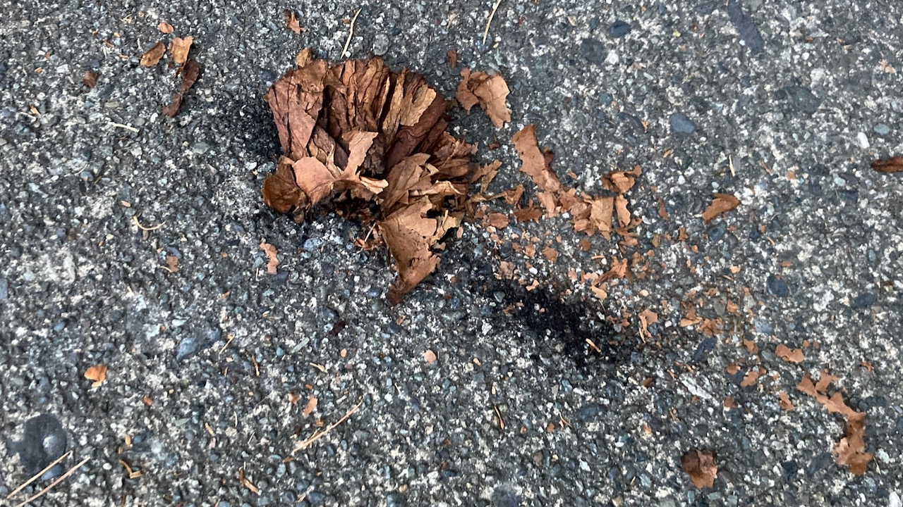
If you enjoy reading this post, please consider supporting this website and allow me to share more of my cigar journey with you. Thank you for reading and I hope you will have a fabulous day!